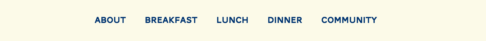
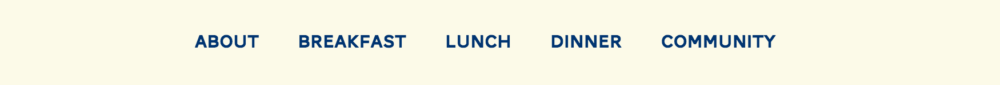

Elements
Links and Hovers
Links and hovers are styled with a #0076a3 color hover.
Navigation
Responsive navigation in the small/global media query
Responsive navigation in the medium and large media queries

Links and hovers are styled with a #0076a3 color hover.
Responsive navigation in the small/global media query
Responsive navigation in the medium and large media queries
